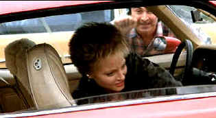

| Accused, The/ B+, B+ |
| Paramount/1988/110/ANA 1.85 |
Sarah Tobias is a tough blue collar young
woman who is gang raped in an ugly bar incident. When the incident is put
in the hands of the police and district attorney's office, the tough
Tobias faces the rapists bravely and only wants to see them put behind
bars for their crime. Though Tobias is the victim, partially because of
her working class style and demeanor, she given less respect and sympathy
than she deserves.
 |
|
Not just another pick-up.
©Paramount
|
The Accused is firstly a tour-de-force
performance film. Jodie Foster is dynamite as Tobias. It's also a strong
courtroom drama dealing with elements of moral corruption within the
establishment. The solid script has but a few carping shortcomings, but
this is a first rate production. The story unfolds with a harsh directness
from the very opening moments.
Foster has an amazingly expressive face. What
composure she exhibits under the most difficult scenes. It's not
surprising that Foster got the Academy Award as Best Actress for her
searing, tough, powerful portrayal of Sarah Tobias. And Foster makes
herself someone you care about. That's screen magic. The lady really has
some acting chops. Kelly McGillis is a solid presence as Assistant
District Attorney Kathryn Murphy. She and Foster have interesting
chemistry.
Kaplan's bright, sharp, revealing style of shooting
marries well to the subject matter. The director keeps the story moving at
an excellent pace. There's little dead time in The Accused.
The DVD transfer delivers a good, clean
even looking picture which never descends into edginess. Comfortable
shadow detail and gray scale are comfortable with excellent black levels.
Color saturation is fully realized with an accurate palette. Flesh tones
are very natural with nice detail within the facial structure. The skin is
truly lively. Plenty of light output delivers a very theatrical look with
excellent contrast ratio in the bank. The glossy look is a picture you
can't look away from. A couple of slightly soft scenes in the court
room are not representative of the DVD. The Brad Fidel score is delivered
cleanly with an open soundstage on the Dolby Digital 5:1 soundtrack.
A strong bass beat emphasized the dramatics. |
|
|
|


General, The /A,B+

Irish gang leader Martin Cahill through the lens of John Boorman makes
fascinating viewing. Watch it in black and white, Boorman's choice.

With the introduction of the Columbia Super Bit collection it
looks like a new wave of repackaging marketing might be just around the
corner.
New Edition: Bit by Bit


Glenn Erickson's insightful DVD reviews have been a Internet fixture for
several years. Check out some of his sophisticated feature articles.
Currently hosted by DVD Talk.

Agoraquest is offering reviews, forums, news, and more
dedicated to Sony products including, televisions, cameras, audio, DVD,
and more.

DVD links, information about Web specials, news, Site reviews.

Terrific resource for learning about the ins and outs of movie
poster collecting.
|